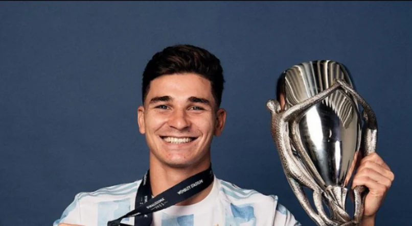

Bem-vindo
24 anos. Julián Álvarez é um futebolista argentino. Joga como atacante. Na Argentina jogou pelo River Plate, onde ganhou a Copa Libertadores e o torneio de Primeira Divisão, e depois emigrou para o futebol inglês, para se desempenhar no Manchester City. Seu excelente jogo despertou o interesse dos ingleses. Teve um desempenho notável durante a Copa do Mundo de 2022 no Catar e, embora ninguém previsse tamanha influência, conquistou o título no time de 11, baseado em esforço e bom jogo. É considerado um jogador-chave nas finais porque é calmo, não se irrita, não discute, corre todas as bolas como se fosse a última e se move para cima e para baixo na quadra com muita habilidade para enganar o rival.
